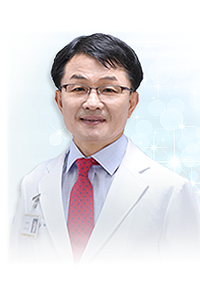

병원장 인사말
 ‘ 소통 공감 혁신 ’전북도민이 자랑스러워하는
지역 거점병원이 되겠습니다.
전북대학교병원 홈페이지를 찾아주셔서 진심으로 감사드립니다. 우리병원은 1909년 전주자혜의원을 모태로 출발해 100년의 역사를 이어오며 도민의 건강증진과 의학발전을 위해 노력해오고 있습니다. 우리 병원은 도민
여러분께 최상의 의료서비스를 제공하기 위한 신념으로 최근 몇 년 동안 전국 어디에 내놓아도 뒤지지 않는 의료 인프라 구축을 위해 노력해왔습니다. 앞으로 이같은 양적 성장을 바탕으로 더 강하고 튼튼한 병원으로 성장하기
위해 '내적 충실화'에 무게를 두고 병원을 운영해 나가겠습니다.
'소통·공감·혁신'을 슬로건으로 △환자중심 병원 문화 정착 △소통과 화합으로 상생하는 병원 △경영합리화를 통해 튼튼한 병원 육성 △진료시스템 개선을 통한 수도권 원정진료 최소화 등을 이루도록 하겠습니다. 환자들의
신뢰와 사랑을 받는 병원, 현장의 작은 소리에 귀 기울이는 병원, 마음을 나누는 따뜻한 병원을 이끌어 전북도민이 자랑스러워하는 지역 거점 병원이 될 수 있도록 최선의 노력을 다하겠습니다.
감사합니다.